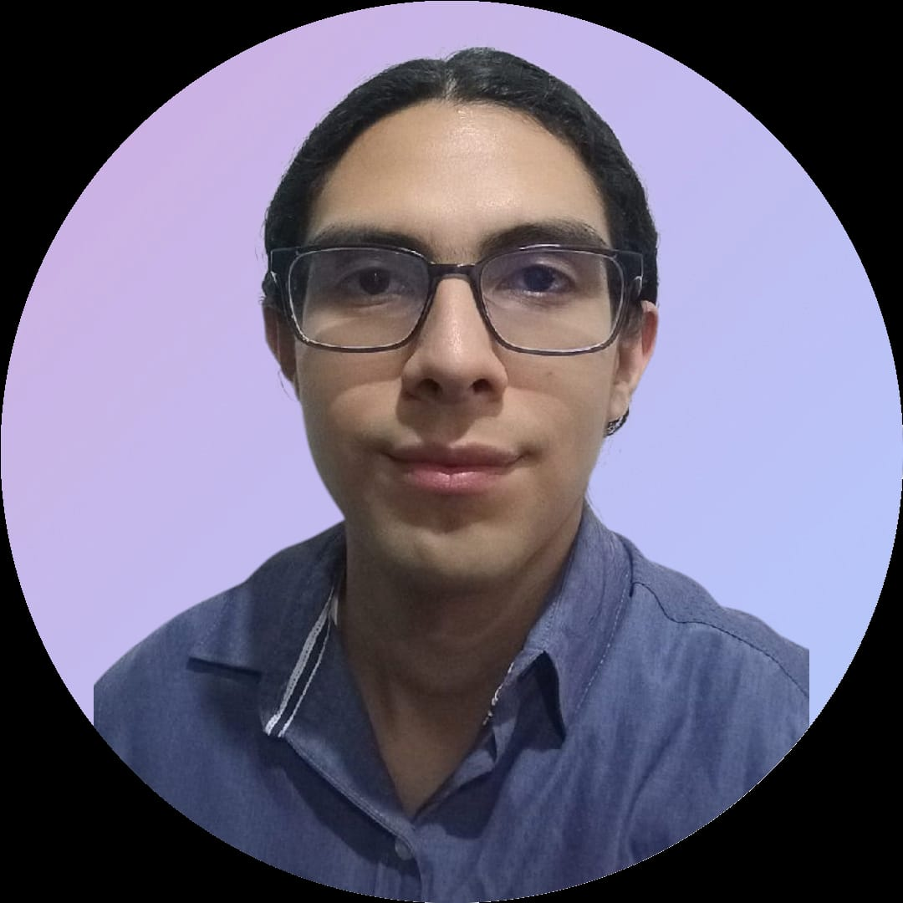
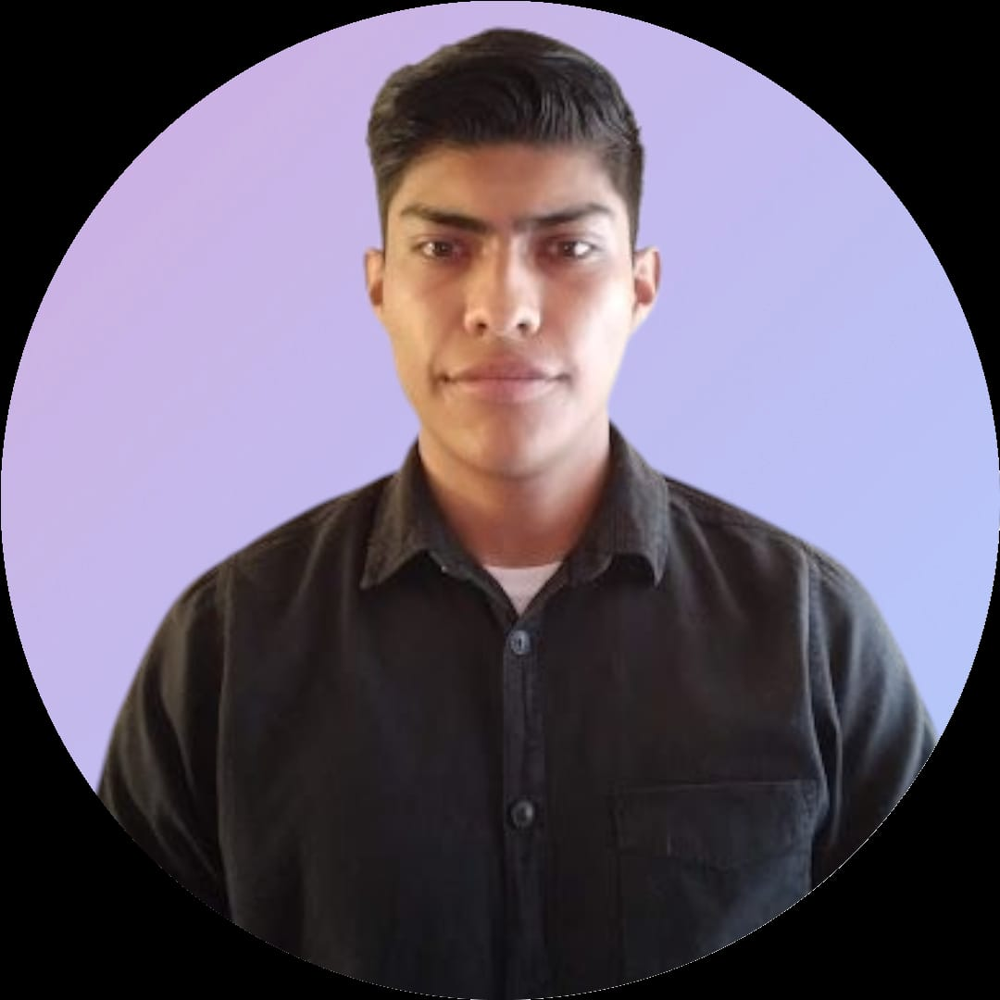
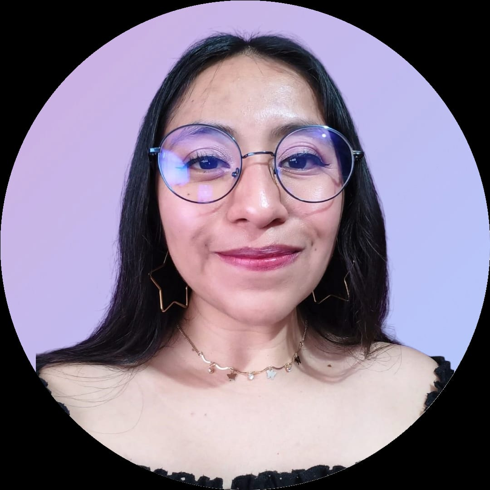

Fredy Alonzo
Ingeniero en Robótica Computacional proactivo, resiliente y comprometido. Con especialización en el Desarrollo FullStack. Cuento con habilidades de trabajo en equipo utilizando metodologías ágiles y el marco de trabajo Scrum con el fin de desarrollar productos de software complejos para satisfacer las necesidades de los clientes.
Rol
Encargado de la gestión de desarrollo de la estructura de navegación de la página, de los servicios y controladores REST.
Ariadna Fragoso

Soy desarrolladora frontend. Actualmente, estoy trabajando en DreamKey, un proyecto innovador de e-commerce en el que colaboro con un equipo diverso. Este proyecto me permite integrar mis conocimientos en programación, creando soluciones eficientes y escalables.
Rol
Encargada del Spring Boot + Frontend + Deployment
Gregorio Galindo
Desarrollador web full-stack enfocado a la resolución de problemas complejos, análisis de requerimientos y diseño centrado en el usuario.
Rol
Encargado del desarrollo de pagina de contacto
Adán Olea

Ingeniero en computación enfocado en en desarrollo backend aunque estudio para llegar a ser fullstack. Soy un apasionado a la teconologia y me gusta estar aprendiendo sobre las nuevas novedades y actualizarme. Tengo un año de experiencia laboral en IBM como Intern Software Developer en donde logre trabajar en grandes proyectos de desarrollo y soporte.
Rol
Scrum master de la iteracion del registro de usuarios en front-end y developer.
Guadalupe Osorio
Soy desarrolladora java fullstack, En este momento me encuentro en el desarrollo de una e-commerce que se llama "Dreamkey" enfocado en la belleza a usuarios que lo requieran. Estoy con un grupo de desarrolladores capaces de realizar este proyecto en donde se distribuye el trabajo en equipo aplicando la metodología SCRUM.
Rol
Encargada de crear un formulario para la creación del modelo (producto), componentes de formularios de Bootstrap, función Javascript, Alertas de Bootstrap
Emmanuel Rojas

Ingeniero en Nanotecnología.
Rol.
A través de DreamKey, trabajé como Scrum Master y Developer en la tarea de almacenar datos de usuario, usando Web Storage API, Bootstrap, Javascript y base de datos SQL. También, trabajé en la experiencia de usuario(UX) con Figma.
Hector Valdez

Soy desarrollador Full Stack, me apasiona combinar mis conocimientos en programación con una visión estratégica para ayudar a los clientes y solucionar sus necesidades. Me motiva aprender, innovar y desarrollar tecnología que genere un impacto. Siempre busco nuevos desafíos que me permitan crecer profesionalmente.
Rol
Forme parte del equipo de desarrollo en el frontend de la pagima y como encargado en las tareas del listado de Objetos y proyecto base
Bruno Velasco

Nacido en Colima un 29 de junio de 1997, estudié la carrera de Ingeniería Mecatrónica y me gradué por proyecto en el Cinvestav. Trabajé dos años y medio como desarrollador de software en Continental R&D. Actualmente me encuentro en formación para ser desarrollador Java Fullstack para Dreamkey.
Rol
Rol: Encargado de la Base de Datos MySQL